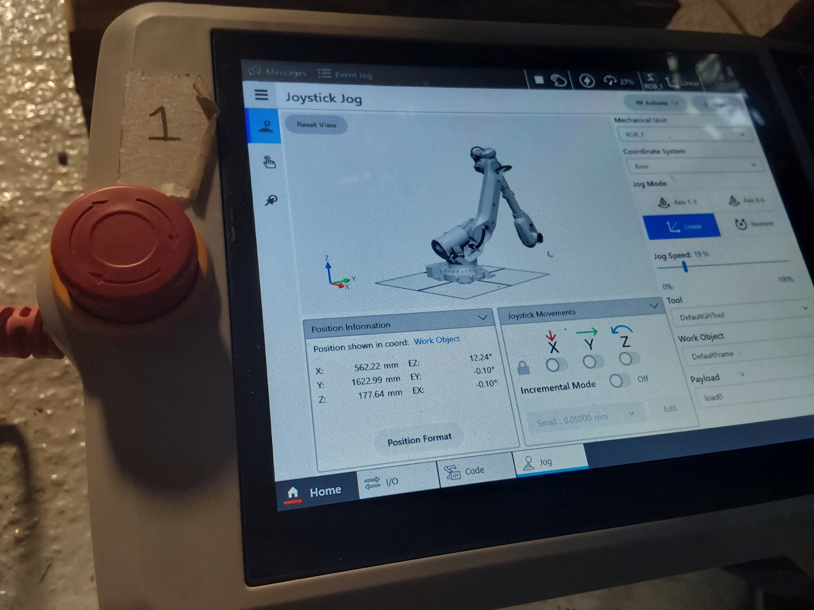
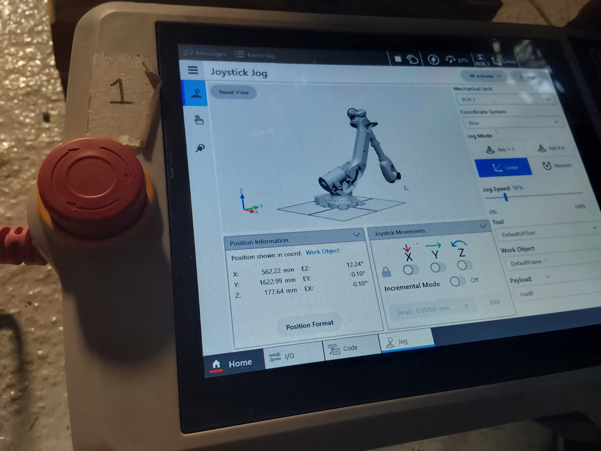

NEW MATERIALS AND NEW METHODS
In our project, we've focused on cork as a core material for creating biocomposites due to its unique properties and sustainability. Cork is not only 100% natural, reusable, and recyclable, but it also stands out for its resistance to fire, high temperatures, friction, and its impressive ability to provide thermal and acoustic insulation. Additionally, it’s hypoallergenic, impermeable to liquids and gases, and has great elasticity and compressibility.
We combined cork granules with binders such as xanthan gum and gelatin, along with additives like bicarbonate, to create a versatile biocomposite. The mix allowed us to print the cork into different forms while maintaining its lightweight and durable characteristics. Through proper mixing techniques and proportions, we were able to achieve a homogenous, viscous mixture suitable for experimental applications with the robot.
The process followed in the workshop sees cork not only as a sustainable resource but also as a material that can perform well under practical conditions, with tests showing impressive resistance to pressure. The project's mix formulations and material testing reflect how cork-based biocomposites could be used in various design and architectural applications, reinforcing its potential beyond just being a natural material—pushing it toward more advanced, performance-driven uses.


 
